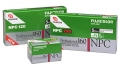

Fujifilm Fujicolor Portrait NPC 160 Prof. 专业彩色负片，极佳的肤色再现，色彩鲜艳。
有次机会尝试了这个卷：朋友扔给我10个过期1年的120规格的，现在已经停产，取代的是PRO 160S。这个我正在大量拍摄4X5的。。。。。
负片的共性：暗部细节突出，色彩真实，反差真实。适合印刷工作 也好伺候，冲洗不用那么严格。可以做彩色暗房放大。当然也可以放黑白。
扫描的话有难度，想把负片扫好，1是需要很好的扫描仪。2是操作人员要对扫描仪的软件相当熟悉。3，而且他本人应该知道负片是什么样的，不能都调成反转那样浓郁。